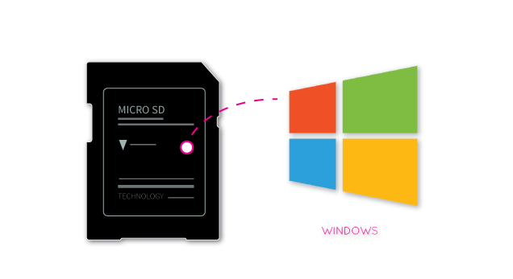
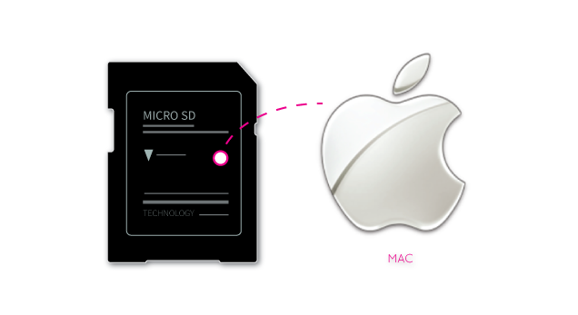
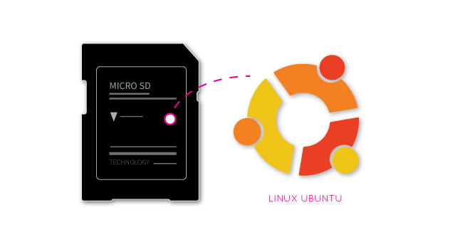

Create A Bootable MicroSD card for UDOO Neo
Overview
The following paragraphs will guide you through the creation of a bootable Micro SD card for UDOO NEO, starting from a precompiled image file containing the UDOObuntu 2 or Android Lollipop Operating system, which runs on the i.MX6 processor. The procedure is quite easy: simply unzip the image and write it on the Micro SD card using the dd tool for UNIX/MAC users or Win32DiskImager for Windows users. It is not possible to create a bootable Micro SD card with drag and drop. Please consider that the size of a Micro SD card must be at least 8GB; higher capacity Micro SD memory cards (tested up to 64GB) may be used but only 8GB will be available at the end of the procedure.
Here is the full guide for Windows with a videotutorial: http://www.udoo.org/tutorial/creating-bootable-micro-sd-card-using-windows-image/
Here is the full guide for MAC OS X with a videotutorial: http://www.udoo.org/tutorial/creating-bootable-micro-sd-card-mac-os-x-image/
Here is the full guide for Linux with a videotutorial: http://www.udoo.org/tutorial/creating-bootable-micro-sd-card-linux-ubuntu-image/
Step by Step Guide
- Download any official Micro SD images from the image section of the website http://www.udoo.org/downloads/.
- Extract the .img file from the .zip file you downloaded into any folder (this path will be referred to as
in the guide). - Follow the instructions below for the OS you use:
Write the image on Micro SD card using Windows

Extract the downloaded zip file and you'll have a .img image file (do not use the preinstalled archive extractor, use 7-zip or similar).
Download the Win32DiskImager software here and unzip it.
If the PC used has a slot for SD cards (Micro SD to SD adapter needed), simply insert the card. If not, insert the card into any SD card reader and then connect it to the PC. Note: the Micro SD card must be formatted using FAT32 File System!
Run the file named Win32DiskImager.exe (with Windows Vista, 7 and 8 right-click the file and select “Run as administrator”).
If the Micro SD card (Device) used is not detected automatically, click on the drop down box on the right and select the identifier of the Micro SD card that has been plugged in (e.g. [H:]). Note: the Micro SD card must be formatted using FAT32 File System!
Please be careful to select the correct drive identifier; if you use the wrong identifier you can lose all data on the hard disk of your PC!
In the Image File box, choose the downloaded .img file and click “Write”. Note: click YES in case it pops up a warning message.
The Micro SD card is now ready to be used. Simply insert it in UDOO’s Micro SD Card slot and boot the system.
Here you can find the video tutorial of Creating a bootable MicroSD card using Windows from image.
Write the image on micro SD card using Mac OSX

Note: May not work with OSX 10.9 Mavericks
From the terminal run
df -h
If the Mac has a slot for SD cards (Micro SD to SD adapter needed), insert the card. If not, insert the card into any SD card reader and then connect it to the Mac. Note: the microSD card must be formatted using FAT32 File System!
Run again
df -h
The device that wasn't listed before is the Micro SD card just inserted. The name shown will be the one of the filesystem’s partition, for example, /dev/disk3s1. Now consider the raw device name for using the entire disk, by omitting the final “s1″ and replacing “disk” with “rdisk” (considering the previous example, use rdisk3, not disk3 nor rdisk3s1). This is very important, since it could result in the loss of all data of the disk of the Mac used, when referring to the wrong device name. Since there could be other Micro SD with different drive names/numbers, like rdisk2 or rdisk4, etc. check again the correct name of the MicroSD card by using the df -h command both before & after the insertion of the microSD card into the Mac used.
e.g.
/dev/disk3s1 => /dev/rdisk3
If the Micro SD card contains more partitions, unmount all these partitions (use the correct name found previously, followed by letters and numbers that identify the partitions).
The code:
sudo diskutil unmount /dev/disk3s1
Now write the image on the Micro SD card using the command:
sudo dd bs=1m if=*path_del_file_img* of=/dev/<sd_name>
Please make sure that you replaced the argument of input file (if=
e.g.
sudo dd bs=1m if=/home/user_name/Download/2013-5-28-udoo-ubuntu.img of=/dev/rdisk3
Once dd has been completed run the sync command as root or run sudo sync as a normal user (this will ensure that the write cache is flushed and that unmounting the Micro SD card is safe).
Then run:
sudo diskutil eject /dev/rdisk3
The Micro SD card is now ready to be used. Simply, insert it in UDOO’s Micro SD Card slot and boot the system.
Here you can find the video tutorial of Creating a bootable MicroSD card with Mac OSX from image.
Write the image on micro SD card Using Linux

From the terminal run:
df -h
If the computer you are using has a slot for SD cards (Micro SD to SD adapter needed), insert the card. If not, insert the card into any SD card reader and then connect it to the computer. Note: the Micro SD card must be formatted using FAT32 File System!
Run again:
df -h
The device that had not been listed before is the Micro SD card just inserted. The left column will show the device name assigned to the Micro SD card. It will have a name similar to "/dev/mmcblk0p1" or "/dev/sdd1". The last part of the name ("p1" or "1", respectively) is the partition number, but it is necessary to write on the whole Micro SD card, not only on one partition. Therefore, it is necessary to remove that part from the name (for example "/dev/mmcblk0" or "/dev/sdd") in order to work with the whole Micro SD card.
If the Micro SD card contains more than one partition, it is necessary to unmount all these partitions (using the correct name found previously, followed by the letters and numbers identifying the partitions) using the following command:
e.g.
sudo umount /dev/sdd1
Now, write the image on the Micro SD card with the command:
sudo dd bs=1M if=<img_file_path> of=/dev/<sd_name>
Please make sure that you replaced the argument of input file (if=
e.g.
sudo dd bs=1M if=/home/<user_name>/Download/2013-5-28-udoo-ubuntu.img of=/dev/sdd
Once dd has been completed, run the sync command as root or run sudo sync as a normal user (this will ensure that the write cache is flushed and that it is safe to unmount the Micro SD card).
Then run:
sudo umount /media/<sd_label>
The Micro SD card is now ready to be used. Simply, insert it in UDOO’s Micro SD Card slot and boot the system.
Here you can find the video tutorial of Creating a bootable MicroSD card with Linux Ubuntu from image.